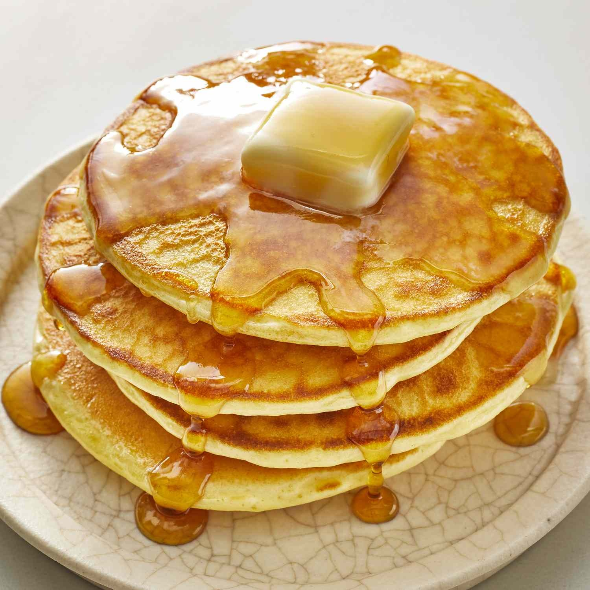

Back to Homepage
Pancakes Recipe

Description
These fluffy pancakes are perfect for breakfast or brunch. They are quick to make and can be topped with your favorite fruits, syrup, or whipped cream.
Ingredients
- 1 cup all-purpose flour
- 2 tablespoons sugar
- 1 tablespoon baking powder
- 1/2 teaspoon salt
- 1 cup milk
- 1 large egg
- 2 tablespoons melted butter
- 1 teaspoon vanilla extract
- Butter or oil for cooking
- Optional toppings: maple syrup, fresh fruits, whipped cream
Instructions
- In a large bowl, whisk together the flour, sugar, baking powder, and salt.
- In another bowl, mix the milk, egg, melted butter, and vanilla extract until well combined.
- Pour the wet ingredients into the dry ingredients and stir until just combined. Do not overmix; a few lumps are okay.
- Heat a non-stick skillet or griddle over medium heat and lightly grease it with butter or oil.
- Pour about 1/4 cup of batter onto the skillet for each pancake. Cook until bubbles form on the surface and the edges look set, about 2-3 minutes.
- Flip the pancakes and cook for another 1-2 minutes until golden brown.
- Repeat with the remaining batter, greasing the skillet as needed.
- Serve warm with your choice of toppings such as maple syrup, fresh fruits, or whipped cream. Enjoy!